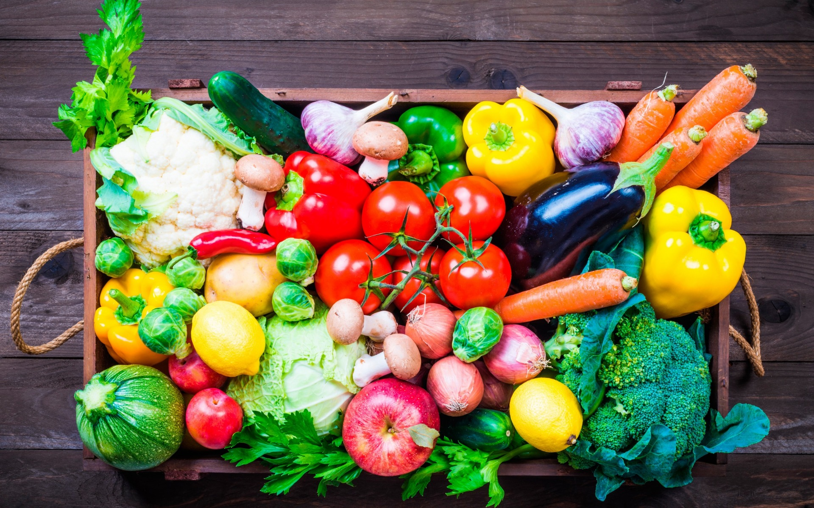

Amazing Resuts in one month
Amazing Resuts in one month
The past decade of food writing has proven that cookbooks are just the tip of the culinary iceberg. If our top picks have anything to show for it, modern food books include memoirs of great chefs and nonfiction accounts of different slices of the food industry. Even the best cookbooks call for a dash of personality and a hint of history.
From a gorgeous encyclopedia of signature dishes from restaurants around the world to a deep dive into how food systems will have to adapt to a hotter, more populated planet, this years food books offer something for every taste.
Ren; Redzepi, head chef at the globally renowned restaurant Noma, was feeling restless despite his restaurants soaring success. When he got in touch with Jeff Gordinier, he found the then New York Times staff writer in a personal and professional slump. In their shared hunger for risk and reinvention, the two men found common ground that would bond them throughout a four-year culinary odyssey. In Hungry, Gordinier chronicles this adventure from gathering figs in parks around Sydney to hunting for sea urchins in the Arctic Circle with vivid prose that is sure to make your mouth water.
At just 30 years old, Kwame Onwuachi already has enough life experience to fill a memoir. In his 20s alone, the Nigerian-American chef appeared as a contestant on Top Chef, opened and closed an elite tasting-menu restaurant, finally found his place as executive chef at Kith/Kin in D.C.—and he was named the 2019 James Beard Foundation Rising Star Chef of the Year. But before his explosive entry to the culinary world, the chef had to fight his way out of a cycle of economic hardship and life on the streets. As Tim Carman writes for the Washington Post, “Onwuachi’s memoir should be required reading, not just for future chefs, but for anyone who wants a glimpse into one man’s tale of what it’s like to be young, black and ambitious in America.”